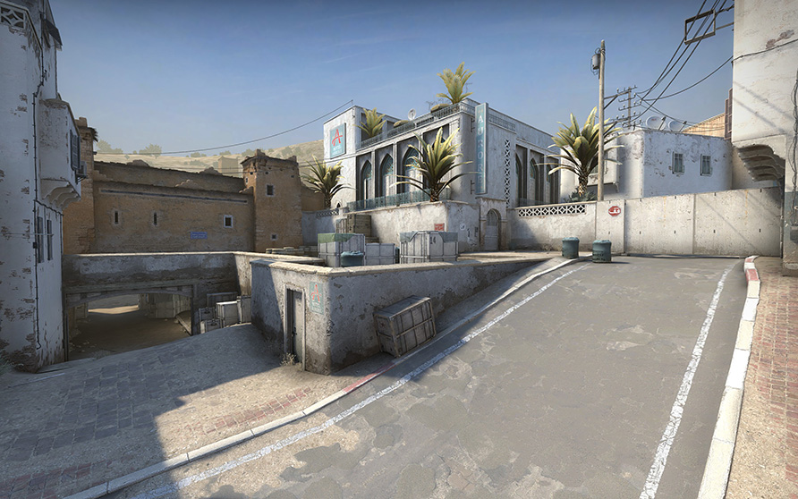
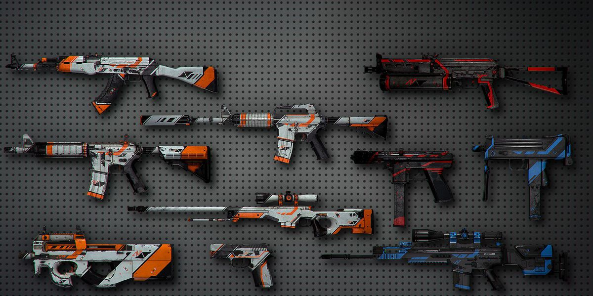
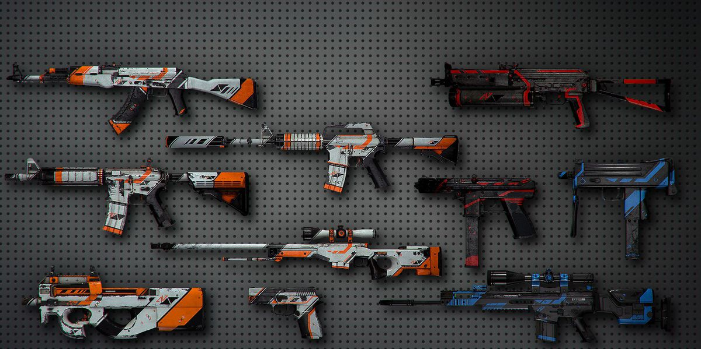
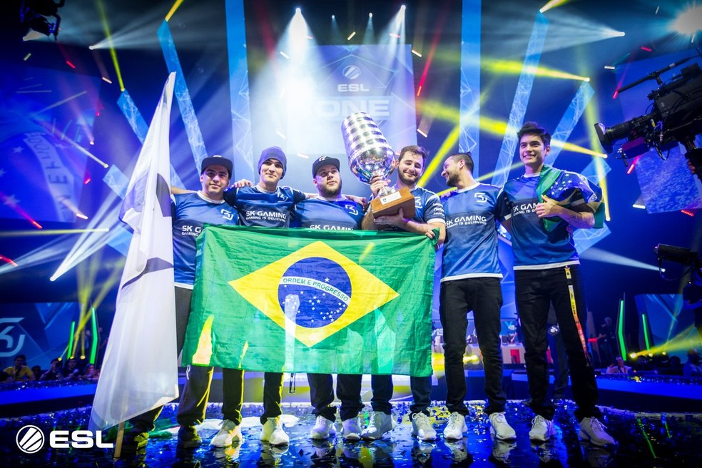

O Counter-Strike: Global Offensive (CS:GO) é a continuação do jogo de equipas cheio de ação que foi pioneiro quando foi lançado há 12 anos atrás.

O CS: GO apresenta-se com novos mapas, personagens, armas e ainda oferece versões atualizadas de conteúdo do CS clássico (de_dust, etc.). Para além disso, o CS:GO introduz novos modos de jogo, matchmaking, tabelas de classificação e muito mais.
 

História Em 1999, o Counter-Strike foi lançado como uma modificação do jogo Half-Life. À medida que o Counter-Strike progrediu desde uma versão Beta até a um jogo completo lançado comercialmente, a jogabilidade clássica foi melhorada para algo que definiu os jogos de tiros competitivos e acabou por criar uma comunidade de jogadores dedicados que têm vindo a seguir o jogo durante mais de uma década.
Ao longo de cada uma das suas versões, (1.6, Source e Global Offensive) o Counter-Strike tem vindo a ser o ponto de referência definitivo do nível de perícia de um jogador. Equipas de todo o mundo estão constantemente a demonstrar as suas habilidades e estratégias em torneios locais, nacionais e internacionais.
Pode-se dizer que bastantes jogadores profissionais de Counter-Strike são autênticas lendas na comunidade internacional de jogos competitivos. Abaixo podes ver alguns vídeos sobre estes jogadores e como eles moldaram a História do Counter-Strike.